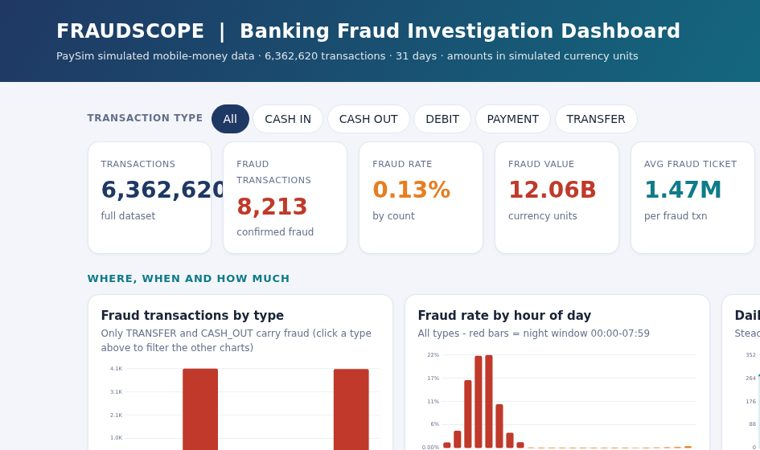
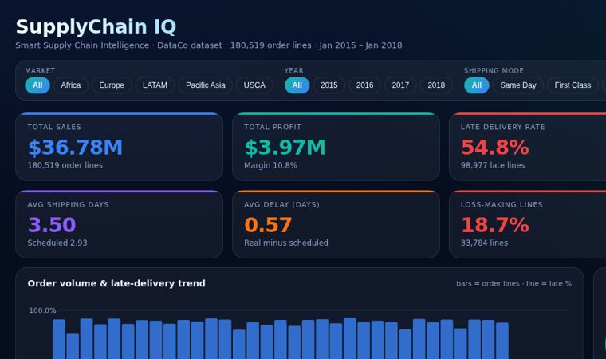
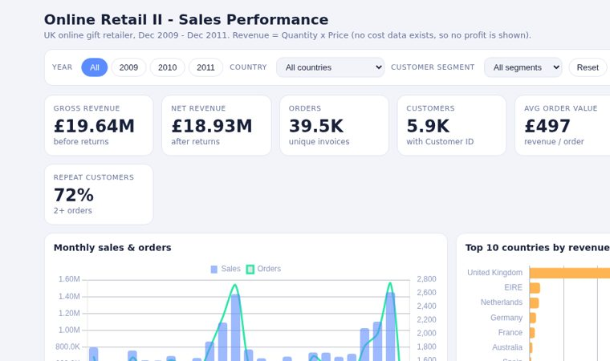

Data analyst and aspiring AI/ML engineer from Bengaluru. I build dashboards, analyse messy data and ship machine learning apps. 2026 B.E. graduate, available now.
Get in touchSee my projectsI have a B.E. in Computer Science and Business Systems from KS School of Engineering and Management (VTU), Bengaluru, and a Data Science and AI certification from Besant Technologies. I interned for six months as a Data Analyst at BDreamz Global Solutions, cleaning sales and distribution data and building Power BI KPI dashboards. Outside of dashboards I build ML and GenAI apps and deploy them so anyone can try them. I speak Kannada, English and some Telugu.
Every project below is live. Open the demo, then read the code.

Problem Fraud hides in millions of normal transactions. Investigators need to know where it happens, when, and which cases to check first.
Analysis of 6.36M PaySim transactions with SQL, a gradient-boosting risk model (AUC 0.997), an Excel investigation workbook and an interactive dashboard. Fraud peaks at 04:00 and sits only in TRANSFER and CASH_OUT.

Problem More than half of orders arrived late and it was unclear which shipping modes and regions caused it.
Dashboard over 180k order lines and $36.8M in sales: late-delivery rate by shipping mode and region, a mode-by-region risk heatmap and a late-delivery prediction model.

Problem Which customers and products drive revenue, and how much is lost to returns?
1.07M transactions cleaned and analysed in SQL, with RFM customer segmentation. The top 10% of customers bring in 63.9% of revenue; 72.4% of customers buy more than once.
Problem Heart disease is easy to miss early. This turns a few health numbers into a clear risk score and advice.
Transformer-based risk prediction with a stacking ensemble, genetic algorithm and PSO feature selection, served in a Streamlit app.
Problem Fraud is rare and slips through, while too many false alarms waste time. The app scores each transaction and shows how well the model separates the two.
Random Forest fraud detection on PaySim transactions with data exploration, model metrics, ROC curve and manual transaction scoring.
Problem Students and small teams juggle separate tools for writing, summarising PDFs and analysing CSVs.
AI workspace for chat, writing, PDF summaries, CSV analysis and OCR, powered by Google Gemini.
Problem Women often do not know where to turn for legal, safety and wellness help, or cannot get it in their own language.
Multilingual AI support for women: legal rights, safety, wellness and career guidance, with an SOS location alert.
Problem Tailoring a resume and cover letter for every job is slow and repetitive.
Scores resume-to-job fit and writes tailored resume bullets and cover letters.
The tools I use to get from raw data to a decision.
Cleaned and prepared sales and distribution data and built Power BI KPI dashboards for the team.
Hiring for a data analyst or AI/ML role, or need a dashboard built? Reach me any of these ways.
Based in Bengaluru, India.